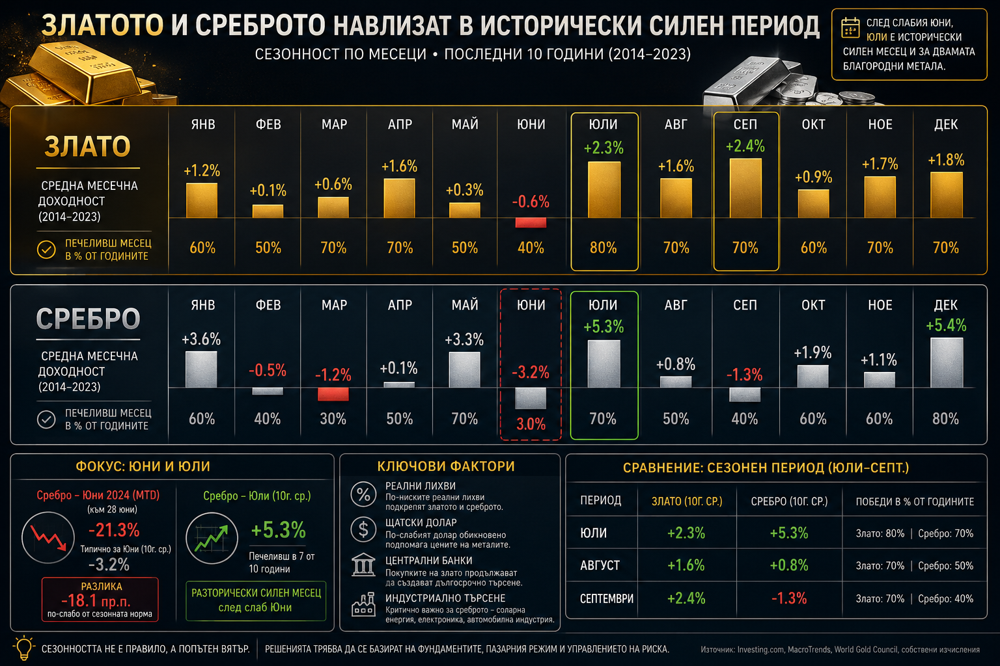

Среброто влиза в исторически най-силния си период — но тази година има една съществена разлика
Сезонността никога не трябва да бъде разглеждана като инвестиционно правило. Финансовите пазари не се движат по календар, а от икономически цикли, парична политика, реални лихвени проценти, сила на долара и промени в глобалния риск. Въпреки това историята показва, че при някои активи съществуват повтарящи се модели, които заслужават внимание. Среброто е един от тях. Именно през следващите седмици благородният метал навлиза в един от най-благоприятните си сезонни периоди, а настоящата година добавя още един интересен елемент към историческата картина.

Юни — слаб, юли — рязък обрат
Статистиката за последното десетилетие показва, че юни традиционно е един от най-слабите месеци за среброто. Средната доходност възлиза на -3.2%, като месецът завършва на положителна територия само 3 пъти от последните 10 години. Това поставя юни сред най-неблагоприятните периоди в годишния цикъл на благородния метал. След него обаче следва рязка промяна. Исторически юли носи средна доходност от +5.3%, като е бил положителен в 7 от последните 10 години. Единствено декември със средно +5.4% се представя малко по-добре.
Сам по себе си този преход между двата месеца е впечатляващ. Разликата между средната доходност през юни и юли достига 8.5 процентни пункта, което представлява една от най-резките сезонни промени в целия календар на среброто. Именно затова инвеститорите следят този период с повишено внимание всяка година.
Тази година: необичайно дълбока корекция
Настоящата година обаче се отличава с нещо още по-интересно. До края на юни среброто вече губи приблизително 21.3%, което е значително по-слаб резултат от историческата сезонна норма от -3.2%. Това означава, че текущото понижение изпреварва обичайната слабост с цели 18.1 процентни пункта.
Подобни отклонения винаги заслужават внимание. Не защото гарантират обръщане на тенденцията, а защото показват, че пазарът вече е реализирал значително по-голяма корекция от тази, която историята обикновено предполага за този период.
В много случаи именно такива екстремни отклонения създават предпоставки за по-силно възстановяване, когато започнат да се подобряват фундаменталните фактори.
Какво движи среброто отвъд календара
Разбира се, сезонността сама по себе си не може да обясни движението на среброто. През последните години благородният метал все по-силно реагира на динамиката на реалните лихвени проценти в САЩ. Когато реалната доходност по държавните облигации се покачва, алтернативната цена на притежаването на актив без текущ доход нараства, което обикновено оказва натиск върху цената на среброто. Обратното също е вярно. При понижение на реалните лихви интересът към благородните метали традиционно се засилва.
Вторият ключов фактор остава щатският долар. Тъй като среброто се котира в долари, силната американска валута прави покупките по-скъпи за инвеститорите извън САЩ и често ограничава възходящия потенциал на цената. Именно затова всяко отслабване на долара исторически създава по-благоприятна среда за благородните метали.
Към тези макроикономически фактори трябва да се добави и особената природа на самото сребро. За разлика от златото, което се възприема предимно като защитен актив, среброто има значително по-голямо индустриално приложение. Производството на соларни панели, електромобили, полупроводници и високотехнологична електроника продължава да създава стабилно физическо търсене. Това означава, че движението на цената се влияе едновременно от инвестиционните потоци и от състоянието на реалната икономика. Именно тази двойствена роля обяснява защо среброто традиционно е значително по-волатилно от златото.
Фундаменталната картина започва да се подобрява
Интересното през настоящата година е, че фундаменталната картина постепенно започва да се подобрява. Пазарът вече отчита по-слабо от очакваното инфлационно ускорение в САЩ, което намалява вероятността Федералният резерв да предприеме ново агресивно затягане на паричната политика. Доходността по облигациите постепенно се стабилизира, а доларът изглежда губи част от импулса си след силното поскъпване през последните седмици. Ако тази тенденция се запази, тя би могла да съвпадне именно с исторически най-благоприятния сезонен период за среброто.
Разбира се, подобен сценарий не е гарантиран. Историята показва вероятности, а не сигурност. Ако реалните лихви отново започнат да се покачват, доларът възстанови възходящия си тренд или глобалният икономически растеж се забави по-рязко от очакванията, сезонният ефект може лесно да бъде неутрализиран. Именно затова професионалните инвеститори никога не използват сезонността като самостоятелен инвестиционен сигнал, а като един от многото елементи в цялостната пазарна картина.
Сезонният период юли–септември накратко
| Месец | Злато | Сребро |
|---|---|---|
| Юни | По-слаб сезонен месец | -3.2% (3/10 положителни години) |
| Юли | Исторически положителен | +5.3% (7/10 положителни години) |
| Август | Силен сезонен период | Положителен |
| Септември | Един от най-силните месеци | По-слаб |
А какво показва сезонността при златото?
Макар среброто традиционно да демонстрира по-силно сезонно поведение, златото също навлиза в една от най-благоприятните части на своя календарен цикъл. Историческите данни показват, че след сравнително спокойния юни интересът към жълтия метал постепенно започва да се засилва още през юли, а възходящата тенденция често продължава през август и септември. Причините не са случайни. Именно през този период започва натрупването на физическо търсене преди индийския фестивален сезон и подготовката за традиционно силното потребление на бижута през последното тримесечие на годината.
За разлика от среброто, чието движение е силно зависимо и от индустриалното търсене, златото реагира значително по-пряко на макроикономическите фактори. Реалните лихвени проценти, динамиката на щатския долар, политиката на Федералния резерв и покупките на централните банки остават водещите двигатели на цената. Именно затова сезонността при златото обикновено е по-плавна и по-устойчива, докато при среброто колебанията са значително по-рязко изразени.
Настоящата година поставя инвеститорите в интересна ситуация. След исторически силното представяне на златото през последните месеци пазарът премина през период на консолидация, предизвикан от по-високите реални лихви и временното поскъпване на долара. В същото време последните инфлационни данни в САЩ постепенно намаляват очакванията за ново агресивно затягане на паричната политика. Ако доходността по облигациите продължи да се стабилизира, а доларът остане под натиск, това може да съвпадне именно с исторически по-благоприятния сезонен период за златото.
Когато двата метала сочат в една посока
Интересното е, че когато сезонността при двата благородни метала започне да сочи в една и съща посока, вероятността за синхронно движение традиционно нараства. Разбира се, подобно съвпадение никога не представлява гаранция за бъдеща доходност. То обаче е статистически фактор, който професионалните инвеститори внимателно следят, особено когато започне да се подкрепя и от фундаменталната макроикономическа среда.
В крайна сметка сезонността трябва да се разглежда като попътен вятър, а не като компас. Тя сама по себе си не определя посоката на пазара, но когато се комбинира с благоприятни фундаментални фактори, може да увеличи вероятността даден сценарий да се реализира. Именно това прави настоящия период толкова интересен. След необичайно слаб юни за среброто и навлизането в исторически силния летен период за двата благородни метала инвеститорите ще следят внимателно дали статистиката и макроикономиката отново ще започнат да работят в една посока.
За инвеститорите най-важният извод е, че сезонността не трябва да се разглежда като прогноза, а като статистическо предимство. В случая със среброто историята показва, че юли традиционно е месецът, в който пазарът най-често сменя посоката след слабия юни. Дали тази закономерност ще се повтори и тази година, ще зависи не само от календара, а и от решенията на Федералния резерв, движението на долара и развитието на глобалната икономика. Именно когато статистиката и фундаментите започнат да сочат в една посока, сезонността придобива най-голяма практическа стойност.
Материалът е с аналитичен характер и не е съвет за покупка или продажба на активи на финансовите пазари.